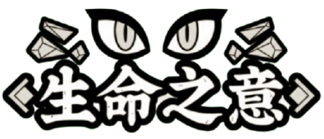
壹、主選單畫面

名稱理念
「生命之意」象徵著人類對存在、起源與永恆的追尋。生命的價值，不在於長久，而在於過程與意志。
「生命」：象徵創造、文明、成長、希望。
「之意」：代表對真理與永恆的理解、內在覺醒。
總結：「理解生命的本質，尋找存在的意義。」
開始介面
1. 遊戲標題
2. 進入遊戲
3. 設定
4. 製作團隊
5. 離開遊戲
貳、遊戲介紹與發想
製作動機
我本身很喜歡「九日」豐富的世界觀、故事、角色設定、呈現方式。最近剪輯有碰觸到朋友玩到這款遊戲，自發現這遊戲的魅力所在，變一直在努力思考喜歡此藝術設計的部分在哪？以及如何融進自己未來的作品當中。
遊戲類別
魂系、故事向、2D 橫向式探索冒險。
設計發想
玩家能夠在此款遊戲中體驗的刺激精彩的冒險，也能體驗到角色在遊戲中掙扎的情緒並與角色一同跨越一道道的難關。
叁、遊戲流程圖
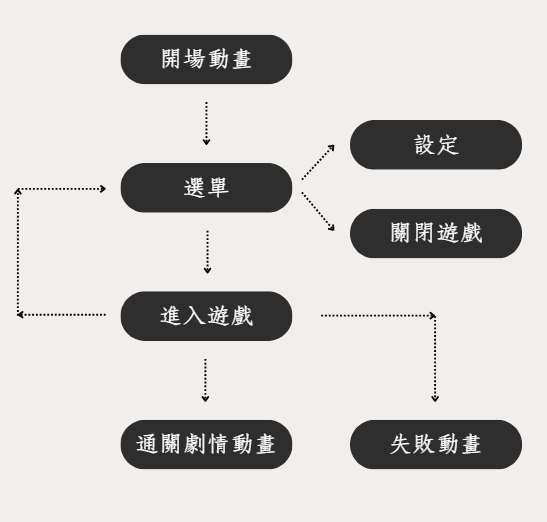
打開遊戲顯示簡單短暫的開場動畫，進入選單即可選擇進入遊戲。進入遊戲後隨時可以開啟選單。
肆、角色介紹
主角：卡夏 (吉爾伽)
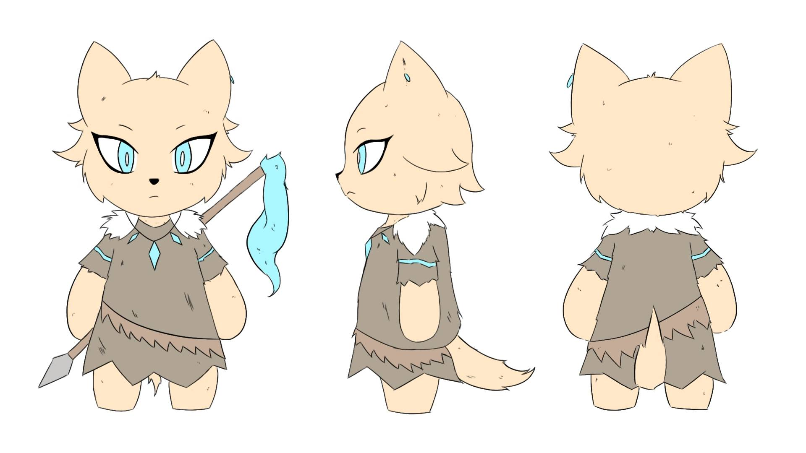
誕生於蘇美時代美索不達米亞的英雄王，曾是暴虐無道的君主，被【恩奇】所逐漸影響成為實至名歸的英雄王。但在失去【恩奇】後，變得彷彿失去了目標與志向。在得知生命之水的存在後踏上了黃泉路。
配角：恩基 (恩奇)
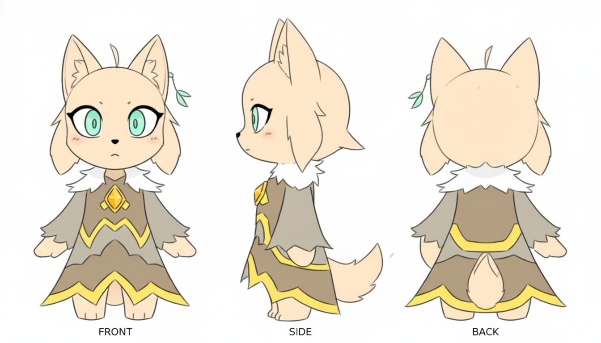
創造女神應人民哀求而創造並降下的人類，在與【卡夏】決戰後變成了相識，並一起冒險過。在【卡夏】的回憶中可得知，【恩基】似乎是被某個神秘人算計所害。
Boss：伊絲 (伊絲塔)
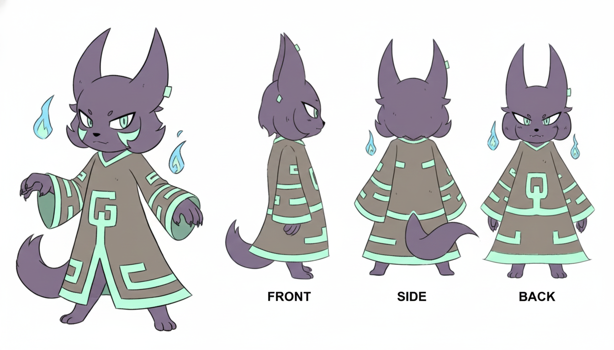
在【卡夏】踏上黃泉之路時相識，在其過程愛上【吉爾伽】並向其表白，但因慘遭拒絕，由愛生恨最後屢次試圖阻饒【吉爾伽】成功拿到生命之水。
伊恩 (小怪)
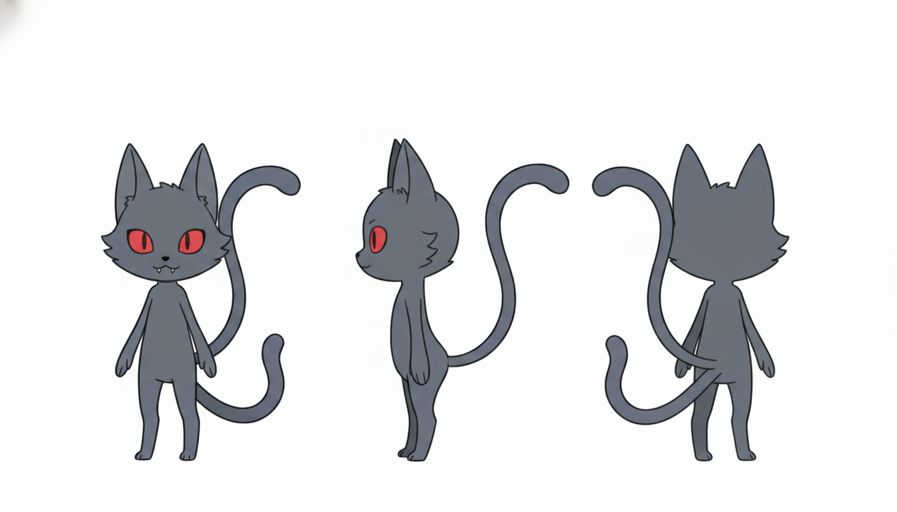
【伊絲】的瘋狂追隨者，兼手下。
伍、遊戲目的&呈現方式
故事
本作品講述【卡夏】與【恩基】從生死搏鬥到成為摯友，一同踏上旅程，最終面臨分離的故事。遊戲主線則聚焦於吉爾伽為了讓【恩基】復活，而展開尋找「生命之泉」的冒險旅程。
相識（Start）：透過鋪陳兩位角色的互動與情感，讓玩家逐步理解【卡夏】與【恩基】之間深厚的羈絆，並明白為何吉爾伽會為了復活恩奇而毅然踏上通往黃泉的旅途。
分離（End）：詮釋即便身為英雄王，在面對摯友的離別時，也會顯露出無力與脆弱，深化故事的情感層次。
遊戲核心目的
此遊戲主要核心為冒險及故事體驗，希望透過其遊戲的方式深入【吉爾伽英雄王】的世界，並與主角【卡夏】踏上黃泉路一同成長。
陸、故事
故事將以主角【卡夏】的視角開始踏上復活摯友的黃泉之路，玩家將扮演【卡夏】與其並肩作戰。
"復活吧我的愛人！ (鬥羅大陸)”
→ 主題：知曉死亡的必然並追尋生命或自身的意義。
遊戲背景部分

柒、遊戲玩法
捌、遊戲參考
遊戲主體的參考對象是魂類系，其中並參雜著豐富的角色故事、背景、冒險體驗的遊戲【九日】。故事的呈現方式則也有參考【UNDERTAIL】故事劇情的對話方式，以及其觀賞體驗。
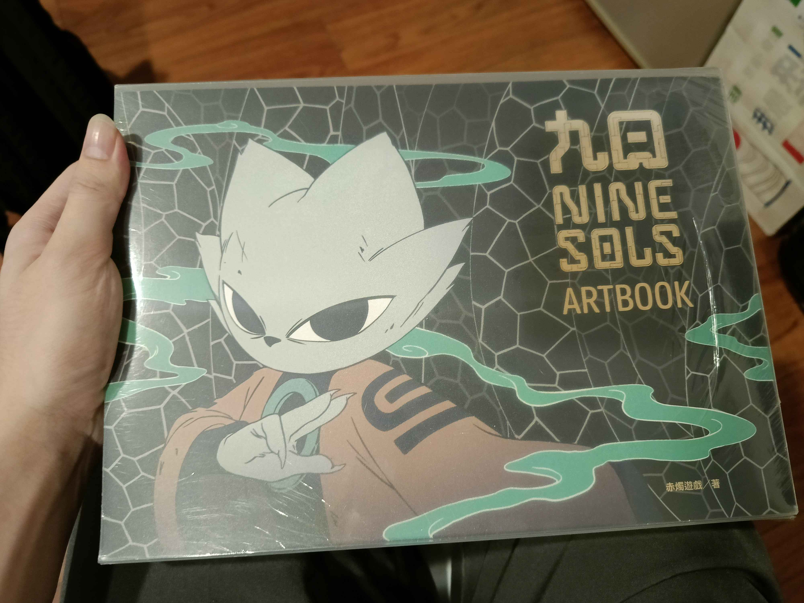
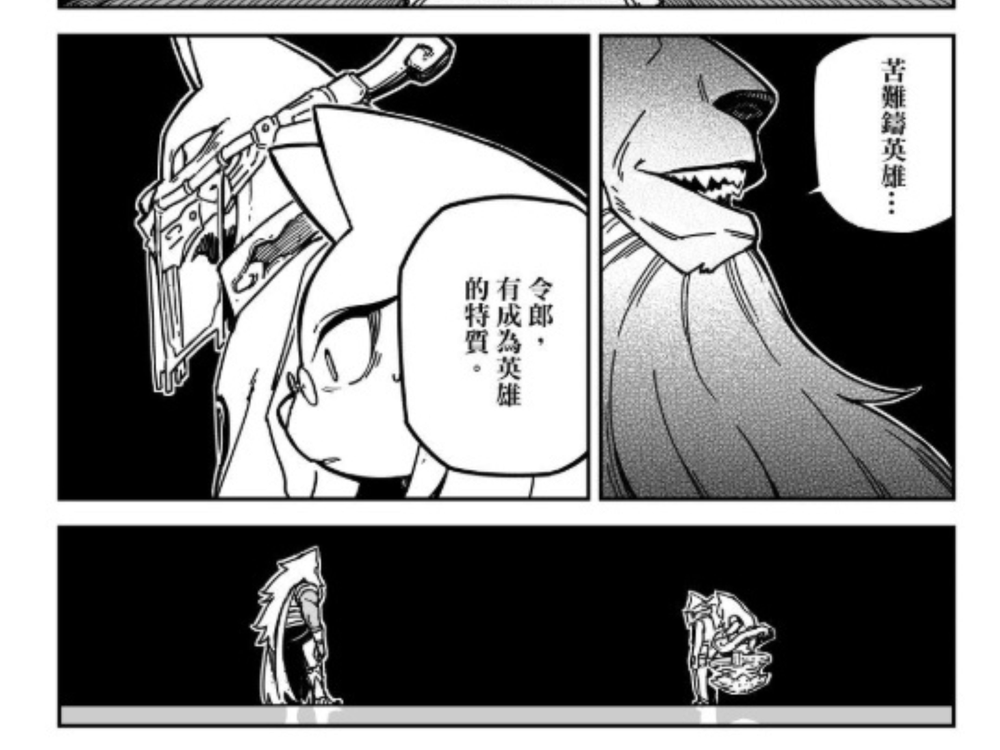
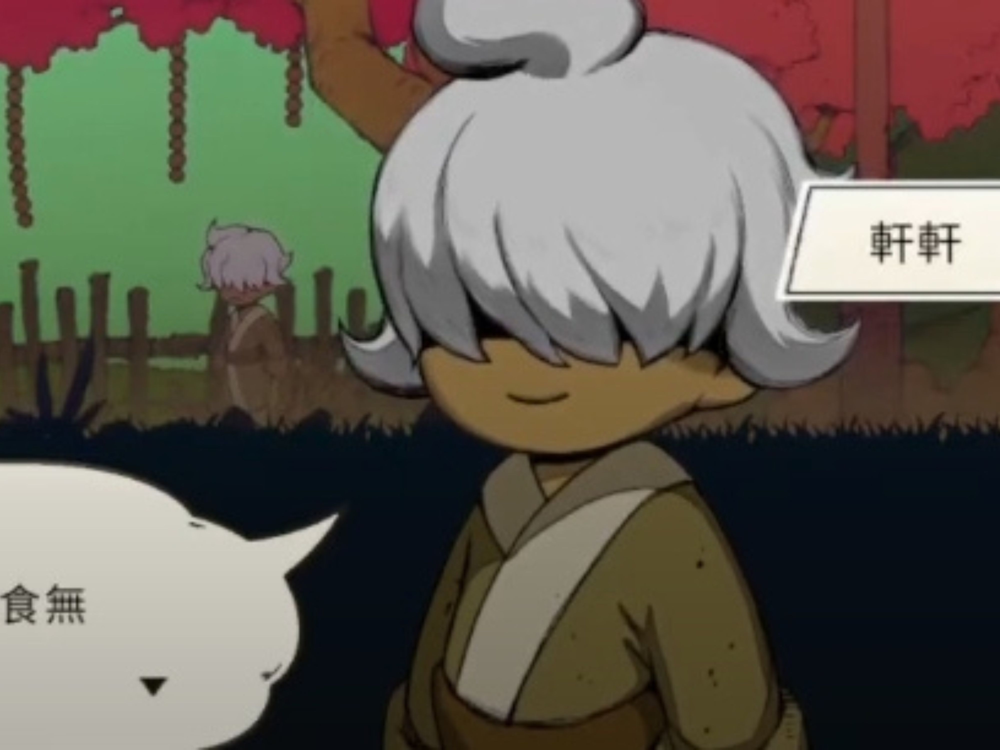
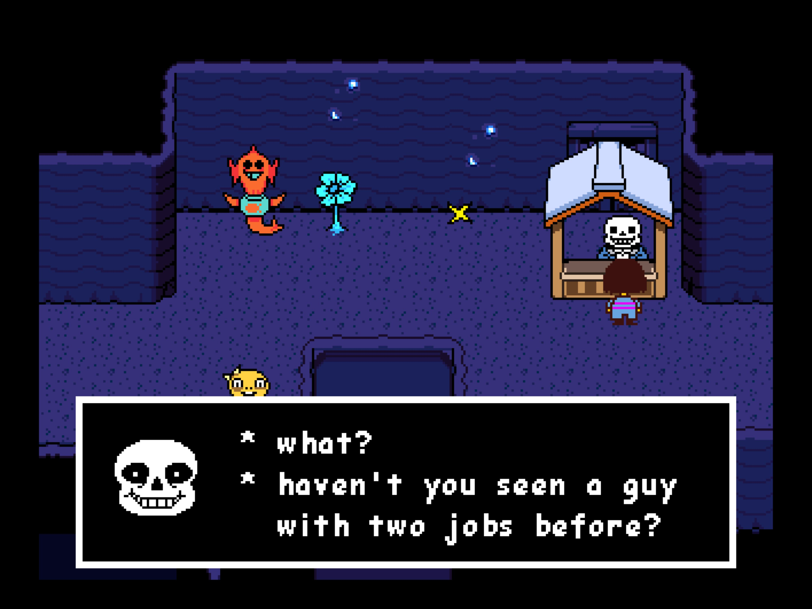
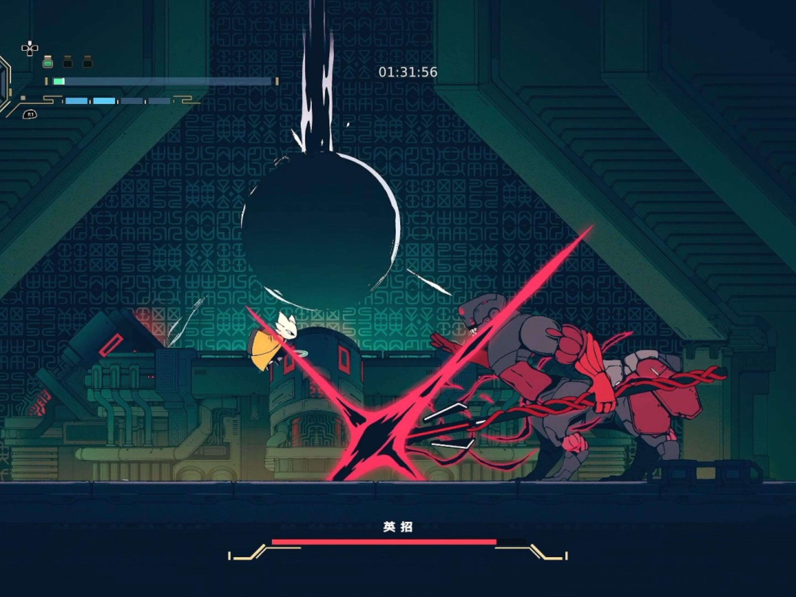
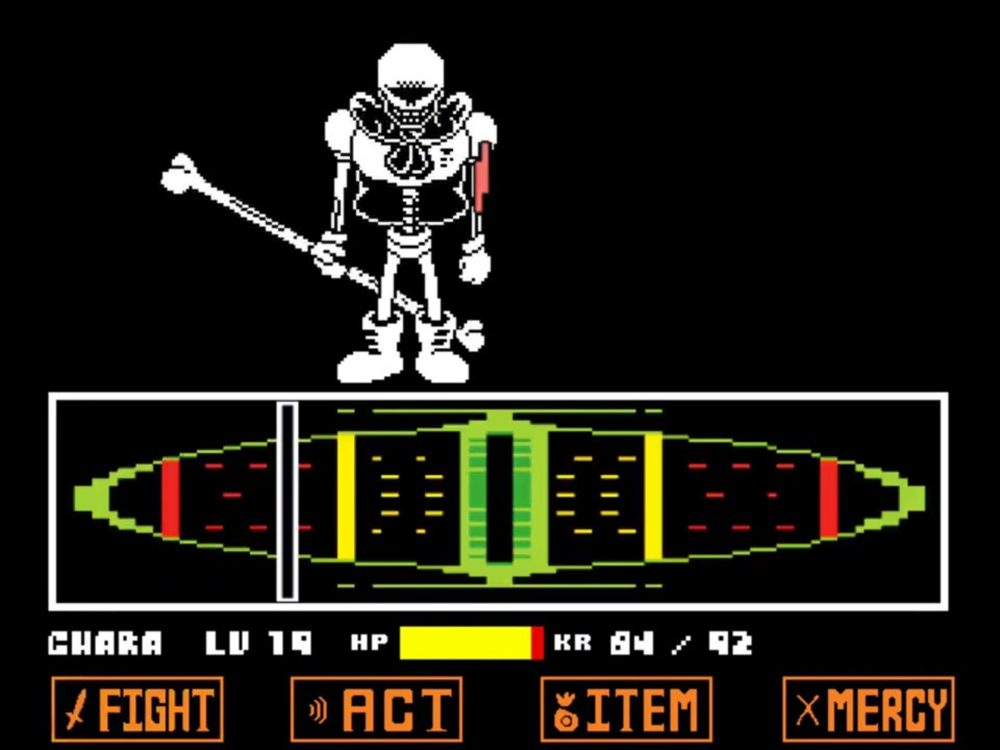
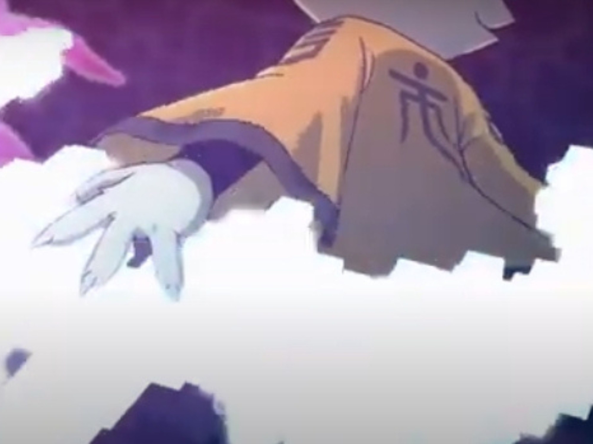